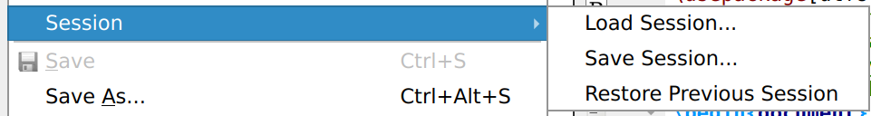
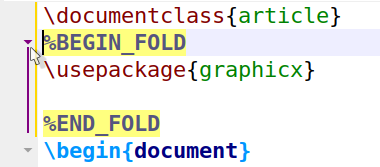
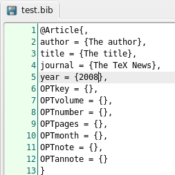
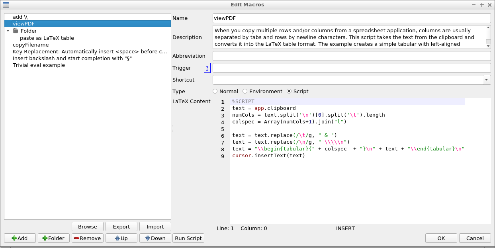
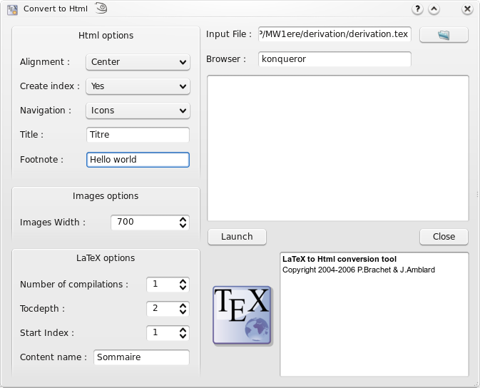

Advanced features#
Sessions#
TeXstudio uses “Sessions” to store and restore the set-up of open documents. Session are stored as .txss2 files. By default, the session is stored when exiting from TeXstudio and restored at start-up.

User Fold Marker#
Normally every structure command marks a start of foldable range, and every environment or TeX group constructs a foldable range. You can mark an extra foldable range by inserting special comments %BEGIN_FOLD and %END_FOLD.

Bibliography#
For the “bib” files , the “Bibliography” menu enables you to directly insert the entries corresponding to the standard types of document.
Note
The optional fields can be automatically deleted with the “Clean” command of the “Bibliography” menu.

Specialized bibliography programs like JabRef allow a more comfortable management of bibliography references. It can also be set up to insert bibIDs directly into TeXstudio.
GIT/SVN Support#
TeXstudio provides some basic support for version control management with git or subversion (svn).
Once set up, saving the document will also generate a check-in.
This is only the case with explicit saves via “File/Save” (or the shortcut CTRL+S), saving via a compile run is not checked in. This allows tweaking the document around compilation runs without overflowing the version management.
Newly saved documents are automatically added to an exsiting repository, if no repository exist, a new one will be generated at the directory level of the document.
Note
You cannot checkout/clone a repository via TeXstudio. Just use the normal tools for this. Once you have a working copy, TeXstudio can operate on it.

- “File/Checkin”
Performs an explicit save and check in, with an input dialog which asks for a checkin in message which is stored in the SVN/GIT history.
- “File/Show old Revisions”
Pops up a dialog, which shows all available revisions. A selection of an older revision leads to instantaneous change of the current document to that older revision. You can select and copy old parts to transfer them to the most recent version of your document, by copying the parts and then going back to most recent version. If you start editing that document directly, the dialog is closed and the present text will be your new most recent version though yet unsaved.
- Lock PDF/Checkin PDF
allows to check in resulting pdf documents into the repository. SVN may lock the pdf from being changed by anyone else.
- Show difference …
shows diffs of two or three files in the editor. Changes are highlighted.
Advanced header usage#
So called “magic comments” are a way to adapt the options of the editor on a per-document level. The concept was originally introduced in TeXshop and has been adopted in a number of editors since. TeXstudio supports the following magic comments:
% !TeX spellcheck = de_DEDefines the language used for spell checking of the document. This overrides the global spellchecking settings. Nevertheless, an appropriate dictionary has to be installed.
If no spellchecking is desired, set value to “none”.
% !TeX encoding = utf8Defines the character encoding of a document.
% !TeX root = filenameDefines the root document for this file (i.e. the file which will be passed to the LaTeX compiler when building). This setting override the automatic root detection in TeXstudio. In turn, it’s overridden, if an explicit root document is set at
Options -> Root Document.% !TeX program = pdflatexDefines the compiler to be used for the document. To be precise, it overrides the default compiler (command
txs:///compile) which is used in the actions “Build & View” as well as “Compile”. Valid options are “latex”, “pdflatex”, “xelatex”, “lualatex” and “usern” (e.g. user0 as user defined command 0)% !TeX TXS-program:bibliography = txs:///biberThis is a TeXstudio-specific setting. It overrides the build-system command specified to the left by the one on the right. In the example, we tell TXS to use the biber command (
txs:///biber) for the general “Bibliography command” (txs:///bibliography). See also the description of the build system.Example:
% !TeX TXS-program:compile = txs:///pdflatex/{-synctex}This will run pdflatex as defined in the option without the
-synctex=1options, see description of the build system.% !TeX TXS-SCRIPT = nameThis defines a temporary script macro .
Example:
% !TeX TXS-SCRIPT = foobar % //Trigger = ?load-this-file % app.load("/tmp/test/test.tex"); % app.load("/tmp/test/a.tex"); % TXS-SCRIPT-END
This defines a temporary script macro which is executed, when the file is loaded, and which in turns loads the two files in /tmp/test.
The macros defined via TXS-SCRIPT are active in all files of a document (e.g. included files). You cannot run them manually. They are run via the trigger (regular expression or special trigger, see section on triggers). The macro is just read once, when the file is opened. Changes during an edit session will only take effect when you reopen the file.
% !BIB program = biberThe special
% !BIB programcommand is understood for compatibility with TeXShop and TeXWorks (also in the variant% !BIB TS-program). This is equivalent to% !TeX TXS-program:bibliography = txs:///biber
Personal macros#
TeXstudio allows you to insert your own macros. These macros are defined with the “Macros - Edit Macros” menu. Macros can consist of simple text which is directly placed into txs. It can also be an “environment” which are automatically extended by begin/end or it can be a java script. The needed functionality can be selected by checkbox.
The “abbreviation” is a pseudo-command for the latex completer. If the pseudo-command is completed, the macro will be inserted instead. Note that the pseudo-command needs to start with a backslash (”\”).
“Trigger” is a regular expression which triggers the inclusion of the macro: When the last written characters match this expression, they are removed and the macro is inserted/executed. (see below for more details).
Some macros can be directly downloaded from an internet repository. The dialog is started with the button “Browse”. For easier data exchange, macros can be im- and exported to a file. If you want to add a macro of your own to that repository, you can hand it in as a feature request on Github. Each macro can be assigned a fixed shortcut in the “Shortcut” box. The list of macros on the left-hand side represents the macro ordering in the macro-menu. It is rearranged with the “up”/”down”/”add”/”remove” buttons or with drag and drop. Folders can be added to sort a larger number of macros sensibly. To move macros into/from folders, only drag and drop works. The “run script” button directly executes a script in the editor for testing.

Text macros#
Apart from normal text, some special codes are recognized and replaced on insertion.
If you write %| somewhere the cursor will be placed at that place in the inserted text. (A second %| will select everything between them).
Write %<something%> to mark it as placeholder which is highlighted in the text and can be selected by
Ctrl+Left/Right. Additional properties of the placeholder can be set after a %:, e.g. %<something%:persistent,id:123,mirror%>. The available properties are:select: The placeholder will be selected (similar to %|)
multiline: The placeholder is used for multiline text. If a macro insertion replaces an existing text, the replaced text is again inserted into a placeholder in the macro. If the original text spans more than one line, it will be inserted into a placeholder with the multiline property. Otherwise in a placeholder with the select-property.
persistent: The placeholder is not automatically removed, when its text is changed in the editor
mirror: The placeholder is a mirror of another placeholder in the macro and thus will always have the same content as the original placeholder. You should set an id, so it knows which placeholders are connected
id:123: The id of the placeholder
columnShift:-12: The placeholder is not placed where the %< markers are, but some columns to the left of it
translatable: The text of the placeholder should be added to translations (only applicable to macros that are known during the compilation of texstudio).
cutInsert: The text of the placeholder is replaced by cut buffer (selected text when the snippet is inserted). This code is only necessary if not the first placeholder is intended to take the cut buffer, e.g. generate env (ctrl+e).
The option %(filefilter%) will be replaced by a filename which is asked for in a file dialog. The file filter is the standard Qt-Filefilterformat. For example “Images (*.png *.xpm *.jpg);;Text files (*.txt);;XML files (*.xml)”, see also Qt-Doc
Environment macros#
The text will be used as environment-name, thus “%environment” will be inserted as:
\begin{environment}
\end{environment}
Note
TeXstudio needs that the env-name starts with “%”, though that character is not placed on insertion.
Script Macros#
Instead of using code snippets, you can also make use of scripting with QJS, an application scripting language based on ECMAScript.
Put “%SCRIPT” in the first line to declare a macro as a script. Here are the objects that provide the interface to the TeXstudio internals:
“editor” allows some top level operations like searching/save/load. in the current document
“cursor” gives access to cursor operations like moving, inserting and deleting texts.
“fileChooser” gives access to the filechooser dialog, a very simple file selection dialog
“app” to access application wide things like the clipboard or the menus
The following table gives an overview on the provided commands.
Command |
Description |
|---|---|
alert(str), information(str), warning(str) or critical(str) |
shows str in a messagebox with a certain icon |
confirm(str) or confirmWarning(str) |
shows str as a yes/no question in a messagebox |
debug(str) |
prints str to stdout |
writeFile(name, value) |
Writes value to file name (requires write privileges) |
readFile(name) |
Reads the entire file name (requires read privileges) |
system(cmd, workingDirectory=””) |
Calls an external command cmd, which includes the program name and its arguments. |
|
Unsuppoted since txs 4.x. Sets a temporary, global variable |
|
Unsuppoted since txs 4.x. Reads a global variable |
|
Unsuppoted since txs 4.x. Checks for the existence of a global variable |
setPersistent(name, value) |
Sets a global configuration variable. (can change the values of the ini file, requires write privileges) |
getPersistent(name) |
Reads a global configuration variable. (can read all values of the ini file, requires read privileges) |
hasPersistent(name) |
Checks if a global configuration variable exists. (requires read privileges) |
hasReadPrivileges() |
Checks if the script has read privileges |
hasWritePrivileges() |
Checks if the script has write privileges |
registerAsBackgroundScript([id]) |
Allows the script to run in the background (necessary iff the script should handle events/signals) |
triggerMatches |
Matches of the regular trigger expression, if the script was called by an editor trigger. |
triggerId |
Numeric id of the trigger, if the script was called by an event trigger. |
|
Unsuppoted since txs 4.x. Includes another script. Can be a filename or the name of a macro. |
pdfs |
List of all open, internal pdf viewers . |
editor.search(searchFor, [options], [scope], [callback]) |
Searches something in the editor. |
editor.replace(searchFor, [options], [scope], [replaceWith]) |
This function searches and replaces something in the editor. It behaves like editor.search apart from the replaceWith argument which can be a simple string or a callback function. If it is a function the return value of replaceWith is used to replace the match described by the cursor passed to replaceWith. |
editor.replaceSelectedText(newText, [options]) |
This function replaces the current selections with newText or inserts newText, if nothing is selected. If newText is a function, it will be called with the selected text and corresponding cursor, and the return value will be the newText. It is recommended to use this function for all text replacements/insertions, since it is the easiest way to handle multiple cursors/block selections correctly. |
editor.insertSnippet(text); |
Inserts a text snippet into the editor. For a list of extended features and syntax see Text Macros. |
editor.undo(); |
undo last command in editor |
editor.redo(); |
redo last command in editor |
editor.cut(); |
cut selection to clipboard |
editor.copy(); |
copy selection to clipboard |
editor.paste(); |
paste clipboard contents |
editor.selectAll(); |
select all |
editor.selectNothing(); |
select nothing (clear selections) |
editor.cutBuffer |
If a macro was triggered by a key press and there was a selection previous to the key press, the content of the selection is stored in the cutBuffer. The selection and its content is removed before the macro is entered. |
editor.find(); |
activate “find panel” |
editor.find(QString text, bool highlight, bool regex, bool word=false,bool caseSensitive=false); |
activate “find panel” with predefined values |
editor.find(QString text, bool highlight, bool regex, bool word, bool caseSensitive, bool fromCursor, bool selection); |
activate “find panel” with predefined values |
editor.findNext(); |
find next |
editor.replacePanel(); |
replace (if find panel open and something is selected) |
editor.gotoLine(); |
activate “goto line panel” |
editor.indentSelection(); |
indent selection |
editor.unindentSelection(); |
unindent selection |
editor.commentSelection(); |
comment selection |
editor.uncommentSelection(); |
uncomment selection |
editor.clearPlaceHolders(); |
clear place holders |
editor.nextPlaceHolder(); |
jump to next place holder |
editor.previousPlaceHolder() |
jump to previous place holder |
editor.setPlaceHolder(int i, bool selectCursors=true); |
set Placeholder |
editor.setFileName(f); |
set filename to f |
editor.write(str) |
inserts str at the current cursors position (if there are cursor mirrors, str will be inserted by all of them) |
editor.insertText(str) |
inserts str at the current cursor position (cursor mirrors are ignored,so it is preferable to use replaceSelectedText or write instead) |
editor.setText(text) |
replace the whole text of the current document by text |
editor.text() |
return the text of the complete document |
editor.text(int line) |
return text of line |
editor.document().lineCount() |
Returns the number of lines |
editor.document().visualLineCount() |
Returns the number of visual lines (counting wrapped lines) |
|
Unsupported in txs 4.x. Use new QDocumentCursor(…) instead, see section cursor. |
editor.document().text([removeTrailing = false], [preserveIndent = true]) |
Returns the complete text of the document |
editor.document().textLines() |
Returns an array of all text lines |
editor.document().lineEndingString() |
Returns a string containing the ending of a line (\n or \n\r) |
|
Unsupported in txs 4.x. |
editor.document().canUndo() |
Returns true if undo is possible |
editor.document().canRedo() |
Returns true if redo is possible |
editor.document().expand(lineNr) |
Unfold the line in editor |
editor.document().collapse(lineNr) |
Fold the line in editor |
editor.document().expandParents(lineNr) |
Expand all parents of the line until it is visible |
editor.document().foldBlockAt(bool unFold, lineNr); |
Collapses or expands the first block before lineNr |
editor.document().getMasterDocument(); |
Returns the open document which directly includes this document |
|
Deprecated: Use getRootDocument() instead |
editor.document().getRootDocument(); |
Returns the open document which indireclty includes this document and is not itself included by any other document |
editor.document().getMagicComment(name); |
Returns the content of a magic comment, if it exists |
editor.document().updateMagicComment(name, value, [create = false]); |
Changes a magic comment |
editor.document().labelItems/refItems/bibItems |
Returns the ids of all labels/references or included bibliography files. |
editor.document().getLastEnvName(lineNr) |
Returns the name of the current environment (at the end of the line). |
documentManager.currentDocument |
Current document (usually the same as editor.document(), unless the script is running in background mode) |
documents.masterDocument |
Master document if defined |
[documentManager.]documents |
Array of all open documents |
documentManager.findDocument(fileName) |
Returns the open document with a certain file name |
documentManager.singleMode() |
Returns true if there is no explicit master document |
|
Deprecated: Use getRootDocumentForDoc(document) instead |
documentManager. getRootDocumentForDoc(document) |
Returns the open document (possibly indirectly) including the given document |
documentManager.findFileFromBibId(id) |
Returns the file name of the bib file containing an entry with the given id |
new QDocumentCursor(editor.document(),line, [column = 0], [lineTo = -1], [columnTo = length of lineTo]) |
Returns a cursor object. If lineTo is given the cursor has a selection from line:column to lineTo:columnTo, otherwise not. |
cursor.atEnd() |
returns whether the cursor is at the end of the document |
cursor.atStart() |
returns whether the cursor is at the start of the document |
cursor.atBlockEnd() |
returns whether the cursor is at the end of a block |
cursor.atBlockStart() |
returns whether the cursor is at the start of a block |
cursor.atLineEnd() |
returns whether the cursor is at the end of a line |
cursor.atLineStart() |
returns whether the cursor is at the start of a line |
cursor.hasSelection() |
return whether the cursor has a selection |
cursor.lineNumber() |
returns the line number of the cursor |
cursor.columnNumber() |
returns the column of the cursor |
cursor.anchorLineNumber() |
returns the line number of the anchor. |
cursor.anchorColumnNumber() |
returns the column of the anchor. |
cursor.shift(int offset) |
Shift cursor position (text column) by a number of columns (characters) |
cursor.setPosition(int pos, MoveMode m = MoveAnchor) |
set the cursor position after pos-characters counted from document start (very slow) |
cursor.movePosition(int offset, MoveOperation op = NextCharacter, MoveMode m = MoveAnchor); |
move cursor offset times. MoveOperations may be: |
cursor.moveTo(int line, int column); |
move cursor to line and column |
cursor.eraseLine(); |
remove current line |
cursor.insertLine(bool keepAnchor = false); |
insert empty line |
cursor.insertText(text, bool keepAnchor = false) |
insert text text at cursor (this function will ignore indentations and mirrors, see editor.write and editor.insertText) |
cursor.selectedText() |
return the selected text |
cursor.clearSelection(); |
clears selection |
cursor.removeSelectedText(); |
removes selected text |
cursor.replaceSelectedText(text); |
replace selected text with text |
cursor.deleteChar(); |
removes char right to the cursor |
cursor.deletePreviousChar(); |
removes char left to the cursor |
cursor.beginEditBlock(); |
begins a new edit block. All cursor operations encapsulated in an edit block are undone/redone at once. |
cursor.endEditBlock(); |
ends an edit block |
app.getVersion() |
Current version (0xMMmm00) |
app.clipboard |
Property to read/write to the clipboard |
app.getCurrentFileName() |
File name of currently edited file |
app.getAbsoluteFilePath(rel, ext = “”) |
Converts a relative filename to an absolute one |
app.load(file) |
Loads a file |
app.fileOpen/Save/Close/…/editUndo/…/QuickBuild/… |
All menu commands (i.e. all slots in the texstudio.h file). You can view a list of all currently existing slots on the “menu” page of the config dialog. |
app.completerIsVisible() |
check if completer is visible. |
app.newManagedMenu([parent menu,] id, caption) |
Creates a new menu and returns it |
app.getManagedMenu(id) |
Returns a QMenu with a certain id |
app.newManagedAction(menu, id, caption) |
Creates a new action and returns it |
app.getManagedAction([id]) |
Returns a QAction with a certain id (all ids have the form main/menu1/menu2/…/menuN/action, with usually one menu, e.g. “main/edit/undo”, see texstudio.cpp) |
app.loadManagedMenu(filename) |
load menu structure from an xml-file, same format as uiconfig.xml |
app.setupToolBars() |
recreate toolbars. Call this if a newly created menu is used in the toolbar. |
app.createUI(file, [parent]) |
Loads a certain ui file and creates a QWidget* from it |
app.createUIFromString(string, [parent]) |
Creates a QWidget* described in the string |
app.slowOperationStarted()/slowOperationEnded() |
Notify txs about the start/end of a slow operation to temporary disable the endless loop detection. |
app.simulateKeyPress(shortcut) |
Trigger a KeyPress event for the given shortcut, e.g. |
new UniversalInputDialog() |
Creates a new dialog |
dialog.add(defaultValue, [description, [id]]) |
Adds a new variable with the given default value, optional description and id to the dialog; and returns the corresponding qt component. A string default value becomes a QLineEdit, a number a QSpinBox and an array a QComboBox. |
dialog.get(nr/id) |
Returns the current value of the nr-th added variable or the variable with a certain id. |
dialog.getAll() |
Returns the value of all variables as combined numerical/associative array. You can use returnvalue[i] to get the i-th variable, and returnvalue.id to get the variable with a certain id. |
dialog.exec() |
Displays the dialog. Returns 1 if the user accepted the dialog, 0 if it was canceled. |
dialog.show() |
Displays the dialog asynchronously. |
|
Not working in txs 4.0.0. |
fileChooser.exec() |
show dialog and wait until it is closed again |
fileChooser.setDir(dir) |
set directory in the dialog to dir |
fileChooser.setFilter(filter) |
set file filter to filter, using the QT-format, see above |
fileChooser.fileName() |
return selected filename (after exec) |
Some examples:
Copy current file name to clipboard:
%SCRIPT app.clipboard = editor.fileName();
Execution of editor text:
%SCRIPT eval(editor.text());
Show all properties of an object:
%SCRIPT function write_properties(obj) { app.fileNew(); newEditor = documentManager.currentDocument.editorView.editor; //access the newly created document newEditor.setText(Object.getOwnPropertyNames(obj).join("\n")); //print the properties } obj = editor; //object to show (e.g. the current editor) write_properties(obj)
Additional action in the edit menu
%SCRIPT var menu = app.getManagedMenu("main/edit"); //get edit menu var act = app.newManagedAction(menu, "script", "scripttest"); //add action act.triggered.connect(function(){alert("called");}); //register simple handler registerAsBackgroundScript("test"); //keep handler valid
Asynchronous dialog:
%SCRIPT var ui = createUI(" ... path to your ui file ..."); //load dialog ui.accepted.connect(function(){alert("x");}) //react to dialog closing registerAsBackgroundScript("abc"); //keep function valid ui.show(); //show dialog
The dialog is described in an ui file which can be created with the Qt Designer.
More examples can be found in the Wiki.
Triggers#
Regular Expressions#
In its simplest form, the trigger is simply a text, which is replaced by the macro. E.g. trigger=”eg” macro=”example given”, “eg” in “the leg” is replaced on pressing “g” by “example given”
As the trigger is a regular expression, more elaborate triggers can be created. TXS makes use of look-behind searching: “(?<=\s)%” is used to replace a “%” if the previous character is a space. More help on regular expressions can be found on the internet.
You can access the matched expression in the script via the global
variable triggerMatches. triggerMatches is an array. It’s zero-th
component is the match to the complete regexp. The following elements
are matches to groups (if groups are defined).
Example:
Trigger: #([a-z])
Typed text: #a
triggerMatches[0] == '#a'
triggerMatches[1] == 'a'
Note: Triggers are inactive while the completer is active. For example
you cannot trigger on \\sec if the completer is open suggesting to
complete \section.
Limitation of Scope#
To the scope in which a macro will be active, you can prepend an
expression of the pattern (?[scope-type]:...).
Scope Limiting Expression |
Meaning |
|---|---|
|
The macro is only active if the highlighting of the document matches the given language. |
|
Restrict the macro to certain highlighted environments. The possible values correspond to the list on the syntax highlighting config page. |
|
Similar to |
You may combine (?language:...) and (?highlighted-as:...)
expressions. However, combing (?highlighted-as:...) and
(?not-highlighted-as:...) does not make sense logically and has
undefined behavior.
Note that you still need the regular expression of the trigger itself.
Here’s a full complex example:
(?language:latex)(?highlighted-as:comment,commentTodo)FIXME. This
trigger responds to typing “FIXME”, but only in comments and
todo-notes of latex documents.
Event Triggers#
Additionally the following special trigger terms (without parentheses) can be used to execute the script when the corresponding event occurs:
Special Trigger |
Executed on Event |
|---|---|
?txs-start |
TeXstudio is started. |
?new-file |
A new file is created |
?new-from-template |
A new file is created from a template |
?load-file |
A file is loaded |
?load-this-file |
The file containing the macro is loaded (only makes sense, if the script is defined as magic comment) |
?save-file |
A file is saved |
?close-file |
A file is closed |
?master-changed |
A document is un/defined as master document |
?after-typeset |
A latex-like command has ended |
?after-command-run |
A command run has ended (e.g. a compile command that calls latex twice and opens the viewer, will trigger this event once, but after-typeset twice) |
Multiple of these special triggers can be combined by | symbols.
Save/Load Profile#
TeXstudio offers the possibility to save/load profile files (.txsprofile). Profile files are complete configuration files, containing all configuration settings. To use it meaningfully for exchanging profiles or settings, the .txsprofile file, which is a text file, should be stripped down to the necessary settings. In case of syntax highlighting, this affects the formats section.
[formats]
data\align-ampersand\bold=true
data\align-ampersand\fontFamily=
data\align-ampersand\foreground=#0055ff
data\align-ampersand\italic=false
data\align-ampersand\overline=false
...
In case of other settings, the setting name is usually similar to the configuration settings name, so guessing should work. The section header for the setting like [formats] or [texmaker] needs to be present before the actual setting.
Example:
[texmaker]
Tools\Commands\latex="latex -src -interaction=nonstopmode %.tex"
The “Convert to Html” command#
This command (from the “Tools” menu ) produces a set of html pages from a LaTeX source file with one image for each html page. Each page in the slide presentation corresponds to one of the postscript pages you would obtain running LaTeX.
The command also produces an index page corresponding to the table of contents you would obtain with LaTeX. Each item of the index page includes a link to the corresponding html page.
You can create links in the html pages by using the \\ttwplink{}{} command in the tex file.
Synopsis:
\ttwplink{http://www.mylink.com}{my text} (external link)
\ttwplink{page3.html}{my text} (internal link)
\ttwplink{name_of_a_label}{my text} (internal link)
Warning
You can’t use this command with the hyperref package (and some others packages). This command can only be used with the “Convert to html” tool.
